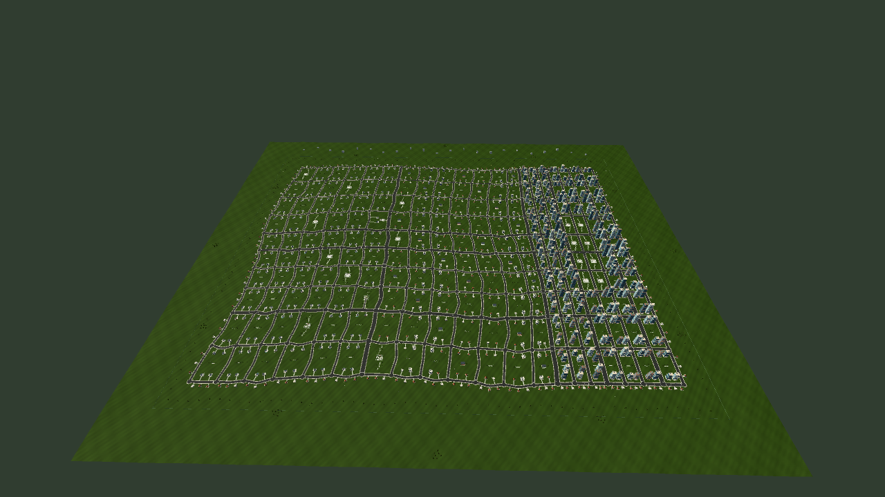

Wave · Jardins, Aurora e Horizonte
Mapa de 3.072 × 2.464 metros, com 200 quarteirões conectados. Escolha um bairro para conferir a arquitetura, as avenidas, o verde e o relevo.

Capturas estáticas no perfil Equilibrado. A vista inicial usa câmera, HUD, neblina e limites de distância do jogo. As vistas de inspeção mostram o conteúdo com neblina e cortes de distância desativados. Não medem FPS.